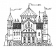

15
Je marche jusqu'au riche manoir. Un domestique à l'air sérieux vient de répondre quelques instants après que j'ai cogné à la porte. « Vous êtes chevalier à ce que je vois? Suivez-moi le maître va vous recevoir dans un moment. » Je suis le serviteur jusqu'à une grande pièce où il me fait assoir dans un immense fauteuil. Un long moment passe. Mais le maître de ce manoir ne vient toujours pas me voir.
|